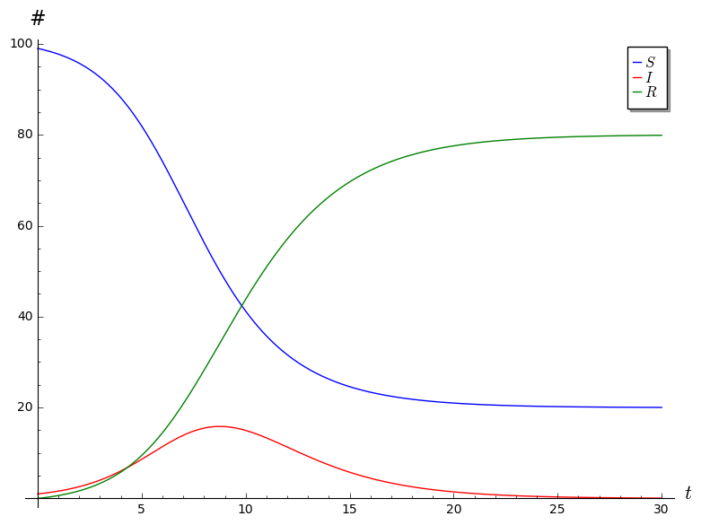

SIR Project Comments
Here are some of the common mistakes I noticed when going through the SIR projects.
- Part I
Question 2. I was looking for the observation that b and c are both forced to be between 0 and 1, since they are both fractions.
Question 3. I was looking for something along the lines of the following: Since \(S + I + R = N\) is constant, we have \[0 = (S + I + R)' = S' + I' + R',\] which means that \(I' = - S' - R'\).
Question 5. All of you said that \(S \to 0\) as \(t \to \infty\). That’s fine, and I didn’t take off points for this, but this is not quite true: all that we know is that \(S\) must stabilize at some value between 0 and \(N\) (because it’s monotonically decreasing and bounded), but there is no guarantee that that value be 0. This will happen when the disease is not very virulent: recovery happens quickly (ie, \(c\) is large), and the disease speads slowly (ie, \(b\) is small). Here is a picture of this kind of situation. In this plot, we have \(c = 0.5\), \(b = 0.01\), \(R(0) = 0\), and \(I(0) = 1\). 
Here’s a question I have: must it be the case that \(I \to 0\) as \(t \to \infty\)? It seems like this should be true, and I haven’t been able to come up with a counterexample, but I don’t know how to prove this directly from the differential equations…
Question 6. I was looking for something along the following lines: Observe that \[ \frac{dI}{dt} = bSI - cI = b\left(S - \frac{c}{b} \right)I.\] We know that \(b > 0\), so the sign of \(dI/dt\) matches the sign of \(S - c/b\). Suppose \(S(0) < c/b\). Since \(dS/dt < 0\), we know that \(S\) is monotonically decreasing, so \(S(t) < c/b\) for all \(t\). Thus \(dI/dt < 0\), which means that \(I\) is monotonically decreasing.
This analysis also tells us that, even if \(S(0) \geq c/b\), as soon as we hit a time \(t_0\) such that \(S(t_0) < c/b\), the infected population will decrease after \(t_0\).
It is also worth pointing out that you cannot conclude that \(I = e^{(bS - c)t}\), since \(S\) is itself varying with time! If you differentiate \(e^{(bS-c)t}\) with respect to time, keeping in mind the chain and product rules, you find that \[ \frac{d}{dt}e^{(bS-c)t} = \left(b \frac{dS}{dt} + (bS-c) \right) e^{(bS-c)t} \] which shows that \(I = e^{(bS-c)t}\) does not satisfy the differential equation that \(I\) needs to satisfy.
Question 7. This is very confusing, so I didn’t take off any points here no matter what you said. Probably when I revise this project for the next time I teach ODEs I’ll add some hints about this. That said, here are some thoughts.
First of all, notice that, in order for the units on the equation for \(dS/dt\) to work out, \(b\) needs to have units \(1/(\text{people} \cdot \text{days})\). Then, in order for the units on the equation for \(dR/dt\) to work out, \(c\) needs to have units \(1/\text{days}\). This means that the units on the quantity \(c/b\) is people. (This makes some sense, since in the previous problem, we were comparing \(S\) and \(c/b\). We know that \(S\) has units people, and a comparison between two quantities only makes sense if the two have the same units.)
But what number of people is \(c/b\)? Well, on a particular day, we have \[ c = \frac{\text{new recoveries}}{\text{infected}} \] and \[ b = \frac{ \frac{\text{new infections}}{\text{susceptible}} }{\text{infected}} \] which means that \[ \frac{c}{b} = \frac{ \text{new recoveries} }{ \text{new infections} } \cdot \text{susceptible}. \] In other words, \(c/b\) is the answer to the following question: if all of the susceptible people become newly infected on a particular day, how many people would recover on that day?
Another interpretation for \(c/b\) falls out of the analysis we did in the previous question. More specifically, \(c/b\) marks a “critical population” of susceptibles: the pointn when \(S = c/b\) is the point when the infected population will start decreasing.
One final interpretation is that \(c/b\) is that this is some kind of a measure of the virulence of the disease (or rather, non-virulence): as \(c/b\) decreases towards 0, the infection spreads more and more rapidly. This is probably the easiest interpretation to see, but it’s a little vague and the units of \(c/b\) are completely opaque in this interpretation.
- Part II
Question 3. The maximum infected population happens around \(t = 7.1\), when the infected population is about 273335. In other words, I was looking for something along the lines of “around day 7.”
Question 6. 90% recovery happens somewhere between \(t = 17.1\) and \(t = 17.2\). In other words, I was looking for something like “around day 17.”